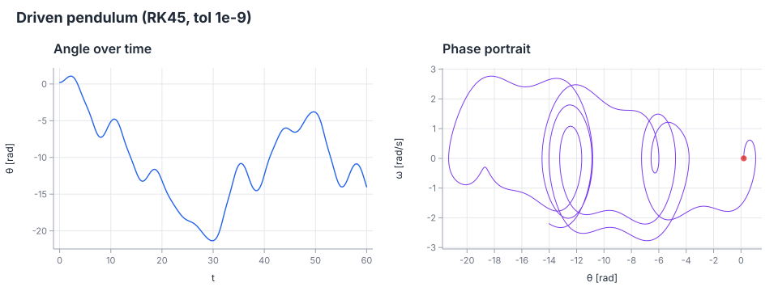
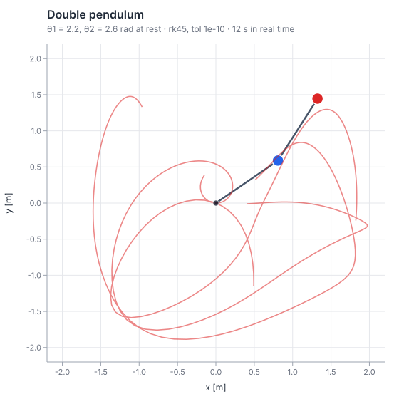
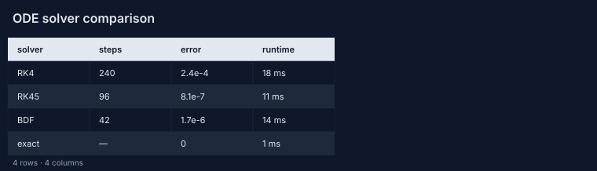
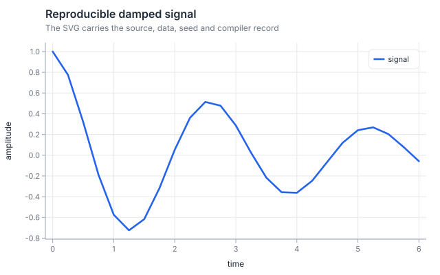

State the model
examples/viz_ode.ostrin defines the derivative and calls numeric.rk45 with an explicit tolerance.
Read the Ostrin source ↗Flagship workflow · source-backed
One small scientific question follows the same path a larger Ostrin project should follow: write the model, run it with the real compiler, inspect the figure, then keep the provenance beside the result.
The question
The example integrates a damped, periodically driven pendulum for 60 seconds. The state is angle and angular velocity; the result is both a time series and a phase portrait.
examples/viz_ode.ostrin defines the derivative and calls numeric.rk45 with an explicit tolerance.
Read the Ostrin source ↗The recorded figure was produced by ostrinc.wasm for wasm32-wasip1. Open the live explorer to rerun the program in the browser.
Open the live ODE explorer ↗Angle over time shows the response; the phase portrait shows the trajectory through state space. The SVG remains standalone and searchable.
Inspect the recorded figure ↗The experiment bundle stores source, input, figure and provenance hashes. Its current contract is R0: exact replay in the recorded CI configuration.
Read the provenance boundary ↗Recorded output
This is the SVG generated from the source above. It can be opened directly, downloaded from the gallery or recomputed through the live explorer.

Extend the question
The same visualization surface supports motion, tables and provenance artifacts. These companion programs show the next steps without hiding which source produced each result.

ANIMATIONScrub an SVG animation and export a selected frame or video when the browser supports it.

TABLEFilter and sort a source-backed table while keeping row values and provenance visible.

PROVENANCEFollow source, data, seed and compiler identity from the figure back to the repository.
Evidence boundary
This workflow verifies exact SVG replay in the recorded browser configuration. It does not claim cross-platform numerical equivalence or a complete R3 host capture. Those remain explicit next steps.
Open the full simulation path →